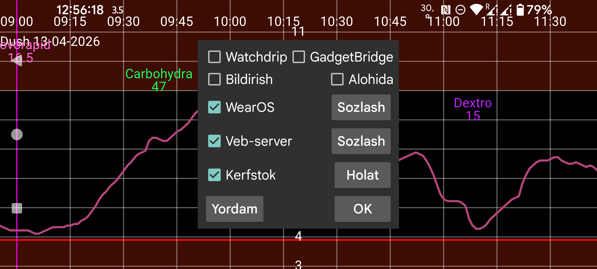

ar be de es fr it nl pl pt ru tr uk uz zh en
Hozir Juggluco glyukoza qiymatlarini soatga yetkazishning olti xil usulini taklif qiladi.
Bildirish yoqilgan bo‘lsa, har safar yangi glyukoza qiymati kelganda Android bildirishnomasi yaratiladi. Ayrim soatlar bildirishnomani faqat yangi bildirishnoma yaratilgandagina qabul qiladi; ular uchun Alohida ni ham yoqish kerak bo‘ladi. Ayrim soatlarda signal bildirishnomalarini olish uchun ham shu parametr kerak bo‘ladi.
Bu parametr yoqilganda Juggluco glyukoza qiymatlarini Watchdrip+’ga yuboradi. Watchdrip+ esa MiBand va Amazfit soatlariga glyukozani ko‘rsatadigan soat yuzlarini uzatadi.
GadgetBridge odatda MiBand/Amazfit soatlarida ob-havo ma’lumotini ko‘rsatish uchun ishlatiladi. GadgetBridge parametri yoqilganda Juggluco glyukoza qiymatlarini ob-havo ma’lumoti sifatida yuboradi. Bu usul Watchdrip’ga qaraganda tezroq, lekin ko‘rsatiladigan ma’lumot kamroq bo‘ladi. Glyukoza qiymati va yo‘nalish strelkasi ob-havo joylashuvi maydoniga yoziladi; bu maydon ko‘pincha soatda Weather bo‘limida ko‘rinadi.
Faqat mmol/L da: nuqtadan oldingi qism maksimal harorat maydoniga, nuqtadan keyingi qism esa minimal harorat maydoniga yoziladi. mg/dL qiymatlar harorat uchun juda katta bo‘lgani sabab oxirgi raqam minimal haroratga, qolgan raqamlar maksimal haroratga yoziladi. Masalan, 106 mg/dL → maksimal 10, minimal 6.
O‘zgarish yo‘nalishi ob-havo ikonkasini belgilaydi: qor — glyukoza pasaymoqda, yomg‘ir — glyukoza ko‘tarilmoqda. Shu yo‘nalish joriy harorat maydoniga ham yoziladi: 0 dan katta — ko‘tarilish, 0 dan kichik — pasayish.
Kerfstok — Garmin uchun mo‘ljallangan soat ilovasi bo‘lib, unda insulin dozalari kabi miqdorlarni kiritish mumkin, shu bilan birga u joriy glyukoza qiymatini ham ko‘rsatadi. Yangi glyukoza qiymati kelishi bilan Juggluco uni darhol Kerfstok’ga yuboradi, shuning uchun Kerfstok har doim eng yangi qiymatni ko‘rsatadi. Kerfstok Garmin qo‘llab-quvvatlaydigan barcha faoliyatlarni yozishi, tezlik va masofani ko‘rsatishi ham mumkin. Batafsil ma’lumot uchun Soat→Kerfstok holati→Yordam ni va https://www.juggluco.nl/Kerfstok sahifasini ko‘ring.
Ayrim ilovalar Juggluco yuboradigan glyukoza broadcastlaridan birini qabul qilib, uni soatga uzatishi mumkin. Masalan, G‑Watch (TizenOS yoki WearOS) Glucodata Broadcast’ni qabul qila oladi. Bu parametrlar chap menyu→Sozlamalar→Ma’lumot almashish bo‘limida joylashgan.
Juggluco ichida xDrip/Nightscout veb serveri bor. Shu sababli xDrip soat ilovalarini Juggluco bilan bevosita ishlatish mumkin. xDrip odatda yangi glyukozani har 5 daqiqada ko‘rsatadi, Juggluco esa har daqiqada yangilaydi. Juggluco xDrip soat ilovalariga eng yangi mavjud qiymatni ham yuboradi. Biroq qiymatlar faqat soat ilovasi so‘raganda yuboriladi; demak ekranda ko‘rinayotgan qiymatning yoshi soat ilovasi qachon so‘rov yuborishiga bog‘liq bo‘ladi.
Masalan, Garmin’dagi soat yuzlari va data field’lar odatda glyukozani har 5 daqiqada bir so‘raydi. xDrip orqali bu ko‘pincha 10 daqiqalik qiymat chiqishiga olib kelgan. Juggluco bilan to‘g‘ridan-to‘g‘ri bog‘langanda esa bu soat yuzlari odatda 6 daqiqagacha bo‘lgan yangi qiymatni ko‘rsatadi. Garmin’da Kerfstok’dan foydalana olmasangiz, yaqindagi glyukozani muntazam olish uchun xDrip widget’i, data field yoki sport ilovasidan foydalanish mumkin, lekin Garmin cheklovlari sabab bu usullar mukammal emas.
Ilgari Juggluco veb serveridan Fitbit uchun Glance soat yuzi bilan ham foydalanish mumkin edi: https://glancewatchface.com. 2024 yil o‘rtalaridan boshlab Fitbit soatlarida uchinchi tomon ilovalari va soat yuzlari qo‘llab-quvvatlanmaydi. Ayrim foydalanuvchilar joylashuvni AQShga o‘zgartirib va VPN’dan foydalanib uchinchi tomon ilovalarini yana o‘rnata olganini aytishadi.
Veb server interfeysi haqida batafsil ma’lumot: https://www.juggluco.nl/Juggluco/webserver.html.
Juggluco’ning Wear OS uchun moslashtirilgan alohida versiyasi ham bor. Unda kichik ekran uchun mos ko‘rinish va qo‘shimcha soat yuzi mavjud. U odatiy Wear OS soat yuzi sifatida o‘rnatiladi va vaqt bilan birga Bluetooth orqali olingan joriy glyukoza qiymatini ko‘rsatadi.